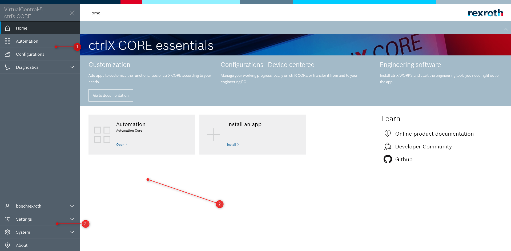

Package Assets
Basics¶
Beside the metadata published using the snapcraft.yaml the package-assets interface provides a way to provide additional information of your app to the ctrlX CORE system. Currently the following information can be provided by the package-assets folder:
- A package manifest containing a declarative description of the app, including permissions, menus and reverse proxy configurations etc.
- Translation files for different parts of the app
- Open Source Software (OSS) information of used Software in the app
Details for each topic can be found below.
Providing the Package Manifest¶
The third-party app has to provide the manifest file to the ctrlX CORE system. Thus, a data exchange has to be set up between the app and the Device Admin app. To exchange information, the content interface with the name "package-assets" is used. This content interface works opposite to the "normal" content interface. In this case, the plug provides data by mounting a directory into the space provided by the slot. Canonical calls this principle "spool mode".
The following example shows the procedure step-by-step.
- Create the folder "configs/package-assets” in the root of your snap project.
- Update your snapcraft.yaml
- Add a new part which copies the content of the "configs" directory to your $SNAP folder using the dump plugin.
- Add the slot "package-assets" to your slot configuration
- Add the relevant files to "configs/package-assets" folder, for detailed information on each file see below.
Example
name: rexroth-myapp
[...]
parts:
configs:
plugin: dump
source: ./configs
organize:
'package-assets/*': package-assets/${SNAPCRAFT_PROJECT_NAME}/
[...]
slots:
package-assets:
interface: content
content: package-assets
source:
read:
- $SNAP/package-assets/${SNAPCRAFT_PROJECT_NAME}
[...]
The Package Manifest¶
An app can provide own menu entries, use the reverse proxy infrastructure including permissions and the storage solution. This document describes the different integration points and how they work.
The package manifest is essential for the integration points. Beside the snapcraft.yaml, it is strongly recommended that the app has to provide the package manifest to be integrated into the ctrlX CORE system.
The package manifest file should follow the naming convention <app name>.<package-manifest>.json where <app name> and the id property in the package manifest are both set to the name (technical app name) as mentioned in the snapcraft documentation.
Schema File¶
The schema for the package manifest JSON file is provided. By explicit assigning this schema file, the configured content will be validated in editors such as Visual Studio Code.
Example
"$schema": "https://json-schema.boschrexroth.com/ctrlx-automation/ctrlx-os/apps/package-manifest/package-manifest.v1.4.schema.json"
| Field | Descriptions |
|---|---|
| $schema | string, valid link to the schema file. default: https://json-schema.boschrexroth.com/ctrlx-automation/ctrlx-os/apps/package-manifest/package-manifest.v1.schema.json,which references the latest 1er version. |
The available versions of the schema file are:
| Version | Available in ctrlX Core | Link |
|---|---|---|
| 1.0 | >=V1.18 | https://json-schema.boschrexroth.com/ctrlx-automation/ctrlx-os/apps/package-manifest/package-manifest.v1.0.schema.json |
| 1.1 | >=V1.18 | https://json-schema.boschrexroth.com/ctrlx-automation/ctrlx-os/apps/package-manifest/package-manifest.v1.1.schema.json |
| 1.2 | >=V1.18 | https://json-schema.boschrexroth.com/ctrlx-automation/ctrlx-os/apps/package-manifest/package-manifest.v1.2.schema.json |
| 1.3 | >=V1.20 | https://json-schema.boschrexroth.com/ctrlx-automation/ctrlx-os/apps/package-manifest/package-manifest.v1.3.schema.json |
| 1.4 | >=V1.20 | https://json-schema.boschrexroth.com/ctrlx-automation/ctrlx-os/apps/package-manifest/package-manifest.v1.4.schema.json |
Version¶
The version of the package manifest file
Example
"version": "1.0.0"
| Field | Descriptions |
|---|---|
| version | string, the version |
Identifier¶
Unique identifier of the package
Example
"id": "sdk-go-webserver"
| Field | Descriptions |
|---|---|
| id | string, the unique identifier of the package |
Required App¶
In specific scenarios (e.g. Brandlabeling (Theming App) or as ctrlX OS Partner) you might want to prohibit the uninstallation and deactivation of your app. This option is only allowed in specific scenarios and requires a justification as part of validation of the app.
Example
"required": true
| Field | Descriptions |
|---|---|
| required | boolean, indicates if the app is required app |
Scopes and Permissions ¶
Scopes provided by the package
Example
"scopes-declaration": [
{
"identifier": "ctrlx-helloworld.web",
"name": "Helloworld Scopes",
"description": "Scopes for the Hello World App",
"scopes": [
{
"identifier": "ctrlx-helloworld.web.all.rw",
"name": "Manage hello world",
"description": "Manage and modify hello world",
"i18n": "scopes.manage"
},
{
"identifier": "ctrlx-helloworld.web.all.r",
"name": "View hello world",
"description": "View (but not modify) hello world",
"i18n": "scopes.view"
}
]
}
]
| Field | Descriptions |
|---|---|
| scopes-declaration | An array, which contains the definitions of the scopes and permissions, see following table |
The Definiton of the scopes-declaration object:
| Field | Descriptions |
|---|---|
| identifier | string, the identifier of the scope set and should start with the snap name |
| name | string, the name of the scope set |
| description | string, the description of the scope set |
| scopes | array, array of scopes objects |
Defition of the scope object:
| Field | Descriptions |
|---|---|
| identifier | string, the identifier of the scope |
| name | string, the name of the scope |
| description | string, description of the scope |
| i18n | string, i18n tag, see language files and translation |
If access is restricted to specific resources, define scopes. When using the Identity Management, an administrator can configure the users and groups allowed to access specific resources. The following example shows two simple scopes (read/write, all settings, read-only settings). In every routine, the web server has to check whether the provided token includes the scope.
Remark
Restrictions apply on the scope namings, identifiers, etc. (see below)
Use the following schema for the main identifier of the scope:
<id>.<service>
- id: Package identifier. Has to correspond to the snap name.
- example: rexroth-solutions, rexroth-vpnmanager
- service: Service identifier.
- example: web
Some examples:
- rexroth-solutions.web
- rexroth-vpnmanager.web
Use this schema for the identifier of the scope:
<id>.<service>.<scope_name>.<access>
- id: Package identifier. Has to correspond to the snap name
- Example: rexroth-solutions, rexroth-vpnmanager
- service: Service identifier
- Example: web
- scope_name: Name of the specific scope
- Example: solutions, connections, configurations, users
- access: Type of access to the resource represented by this scope. Supported are:
- r: read-only, allows read-only access to specific resources
- w: write-only, allows write-only access to specific resources
- rw: read/write, allows read-only and write access to specific resources
- x: execute, executes a specific action represented by a resource
Some examples:
- rexroth-vpnmanager.web.shortcuts.r: Read-only access to VPN shortcuts
- rexroth-vpnmanager.web.shortcuts.rw: Read and create VPN connection shortcuts
- rexroth-deviceadmin.web.own_password.w: Update (but not read) the password of the user who currently logged in
- rexroth-vpnmanager.web.shortcuts.x: Start/stop VPN connections via existing starters (shortcuts)
Enforcing permissions in your service¶
The web server has to enforce the defined permissions. The following pseudo code snippet shows a simple example in which the function ListAddresses checks whether the client has the permission to execute the function. The scope "rexroth-device.all.rwx" is a special scope reflecting an administrative access permission.
Example
func ListAddresses(w http.ResponseWriter, r *http.Request) {
// Define valid scopes for resource access
scope := []string{"networkmanager.all.r", "networkmanager.all.rw", "rexroth-device.all.rwx"}
// Extract scopes from http request and compare them to valid scopes
// Return if not authorized
if ok, _ := checkPermissions(r, scope); !ok {
errors.ErrUnauthorized.Write(w)
return
}
}
Admin Scope¶
By default, the Identity Management provides a special admin scope ("rexroth-device.all.rwx”) that should only be assigned to admin users. It is recommended to grant users full access to your web application if they are provided with this permission. This facilitates the handling of administrator accounts.
The following snippet shows the definition of the admin scope. You can see (and assign) the permission to users and/or groups.
Example
{
"identifier": "rexroth-device",
"name": "Global device administration",
"description": "Global device administration permissions allow unrestricted access to all system resources",
"scopes":[
{
"identifier": "rexroth-device.all.rwx",
"name": "Administration access",
"Description": "Unrestricted, administrative access to system resources"
}
]
}
Services¶
Services contains a set of services that a package provides
Example
"services": {
"proxyMapping": [
{
"name": "sdk-go-webserver",
"url": "/sdk-go-webserver/",
"binding": "unix://{$SNAP_DATA}/package-run/sdk-go-webserver/web.sock",
"restricted": []
}
]
}
Proxy Mapping¶
Proxy mapping is used by the reverse proxy to assign specific routes to a server running on a device.
Example
"services": {
"proxyMapping": [
{
"name": "rexroth-solutions.web",
"url": "/rexroth-solutions",
"binding": ":5000",
"restricted": [
"/rexroth-solutions/api/v1.0"
]
}
]
}
The reverse proxy handles all external web-based (HTTP/HTTPS) requests to the device. The reverse proxy provides the following functionality:
- Automatic HTTPS: By default, all data exchanged between client and server is encrypted.
- Token validation: By default, only authenticated users may access resources on the device (except the login page). Requests with invalid tokens (lifetime expired, invalid signature) are rejected.
The proxy mapping provides the configuration required by the reverse proxy to redirect requests for a specific URL to a web server running on the device.
Providing a proxy configuration is optional in some cases (e.g. if your snap does not provide a web service). If a proxy configuration is provided, the following parameters are valid:
| Field | Descriptions |
|---|---|
| name | Name of the web service. The format is: <id>.<service>The name has to be unique and should start with the snap name. Examples: - rexroth-solutions.web - rexroth-hmi.web |
| url | URL provided by the reverse proxy. When a client tries to access this URL, the reverse proxy transparently redirects the request to the web server. Thus, your web server has to be configured to listen to e.g. "/cool-app" and not "/". Must not conflict with other web service URLs, so it should start with the snap name, syntax: "/{$SNAP_NAME}". Examples: - /rexroth-solutions - /rexroth-hmi |
| binding | Resource identifier to which the reverse proxy redirects the requests. The resource can either be a port or a Unix socket. Using a Unix socket is highly recommended. Examples: - :5000 - 192.168.1.17:5000 - "unix://{$SNAP_DATA}/package-run/rexroth-solutions/rexroth-solutions.web.sock" |
| restricted | Restricted URL. Only authenticated clients can access the URLs defined here. One important example is the API URL(s) - those URLs should be restricted in most use cases. Examples: - /rexroth-solutions/api/v1.0 |
Info
Remark: If a snap provides multiple web servers, multiple ProxyMapping entries are allowed.
Binding¶
Unix sockets (recommended)¶
To use Unix sockets, the web server of your application has to bind against a Unix Domain Socket. Most web server frameworks already support this functionality. The benefit of Unix sockets is the additional security (file access can be restricted via file permissions) and the lower attack surface on network level (the service cannot be reached externally). To enable your snap and to provide the reverse proxy access to your Unix socket, use the content interface slot "package-run". It uses the same mechanism as the "package-assets" interface.
Example
package-run:
interface: content
content: package-run
source:
write:
- $SNAP_DATA/package-run/${SNAPCRAFT_PROJECT_NAME}
In the example mentioned above, your "unix socket file" should be created under {$SNAP_DATA}/package-run/{$SNAP_NAME}/web.sock. The file has to be managed completely by your application logic and - in contrast to a network socket, has to be deleted after unbinding. Also consider deleting the Unix domain socket before binding your web server before start-up.
Now, publish the information on the socket file using the package-manifest via the ProxyMapping described above. The relevant part is the "binding" section below. Replace
Warning
The path length of a Unix socket is limited to 108 characters. Thus, ensure that the resolved path, e.g /var/snap/third-party-snap/current/package-run/third-party-snap/third-party-snap.web.sock does not exceed that limit and that the highlighted part does not exceed 50 characters. If required, shorten the path by replacing "package-run" with "run" and change the file name from "third-party-snap.web.sock" to "web.sock".
Example
"services": {
"proxyMapping": [
{
"name": "third-party-snap.web",
"url": "/cool-app",
"binding": "unix://{$SNAP_DATA}/package-run/third-party-snap/web.sock"
}
]
},
Local host (not recommended)¶
Only bind to a local host if a Unix domain socket (see above) cannot be used. Your app has to bind to a specified port that is not used by other apps.
Example
"services": {
"proxyMapping": [
{
"name": "third-party-snap.web",
"url": "/cool-app",
"binding": ":4711",
}
]
}
Menus¶
An app can be integrated into the ctrlX CORE navigation by defining menu entries. There are three possible integration points:
- Sidebar: To allow the navigation to the main functionality of your apps
- Settings: To allow the navigation to your app settings
- Home Overview: To provide a customized tile for your application

Example
"menus": {
"sidebar": [
{
"id": "solutions",
"title": "Solutions",
"icon": "bosch-ic-solutions",
"permissions": ["solutions.r", "solutions.rw"],
"items": [
{
"id": "solutions-activeconfiguration",
"title": "Active Configuration",
"link": "/solutions/activeconfiguration",
"permissions": ["solutions.r", "solutions.rw"],
"items": []
},
{
"id": "solutions-overview",
"title": "Solutions Overview",
"link": "/solutions/solutions",
"permissions": ["solutions.r", "solutions.rw"],
"items": []
}
]
}
],
"settings": [
{
"id": "solutions-settings",
"title": "Solution Settings",
"icon": "bosch-ic-gear",
"link": "/solutions/settings",
"permissions": ["solutions.rw"],
"items": []
}
],
"overview": [
{
"id": "solutions-overview",
"title": "Solutions",
"description": "Manage solutions on the control",
"icon": "bosch-ic-solutions",
"link": "/solutions/activeconfiguration",
"permissions": ["solutions.r", "solutions.rw"],
"items": []
}
]
}
If the third-party app uses a specified port and not our reverse proxy infrastructure, use the template variable "${hostname}" to allow the ctrlX CORE to replace it dynamically. E.g.:
Example
{
"id": "node-red",
"title": "Node-RED",
"link": "http://${hostname}:1880/"
}
If you want to open your application in your own tab, you can define the target tab. After this integration, a third-party app opens in a separate tab in the browser. If your application can integrate and validate the ctrlX CORE token. You can "transfer" the token using a query field. This is done with the template variable "${bearertoken}".
Example
"menus": {
"sidebar": [
{
"id": "app-name",
"title": "My App Name",
"icon": "myApp-Icon",
"permissions": [],
"items": [
{
"id": "myApp-Id",
"title": "MySideBarTitle",
"link": "/app-name?access_token=${bearertoken}",
"target":"myApp-Id",
"permissions": [],
"items": []
}
]
}
]
}
| Field | Descriptions |
|---|---|
| sidebar | array of entries, which contains the definitions to the sidebar menus |
| settings | array of entries, which contains the definitions to the settings menus |
| overview | array of entries, which contains the definitions to the overview menus |
| system | array of entries, which contains the definitions to the system menus |
The definition of the object entries
| Field | Descriptions |
|---|---|
| items | array of entries, which contains the definitions to the sublinks |
| link | string, link to the ressource |
| target | string, which specifies where the link is shown. Use "_blank" or a specific name to open the link in a new tab (recommended for 3rd-party apps) |
| id | string starting with the snap name, used as a unique item identifier to order items |
| title | string, the text representation of the entry point |
| description | string, the description of the entry point |
| icon | string, an icon, which represents the entry point |
| category | string, the category the entry point belongs to |
| permissions | array of string, an optional list of permissions to enable the entry point |
| i18n | string, i18n tag, see language files and translation |
Commands¶
Example
"commands": {
"activeConfiguration": {
"save": [
{
"id": "ctrlx-helloworld",
"subject": "hello world",
"url": "/ctrlx-helloworld/api/v1/save"
}
],
"load": [
{
"id": "ctrlx-helloworld",
"subject": "hello world",
"url": "/ctrlx-helloworld/api/v1/load"
}
]
}
}
The definition of commands object
| Field | Description |
|---|---|
| commands | object, which references commandScope, which references command, which referneces to commandRequest |
The definition of commandRequest
| Field | Description |
|---|---|
| id | string, the identifier of this command |
| subject | string, denotes what will be saved or loaded |
| after | array of string, a list of command identifiers whose commands if present will always be executed before this command |
| url | string, The request URL |
| execution | object, The execution object is deprecated. Use url object instead |
The definition of the execution object
| Field | Description |
|---|---|
| method | string, enum put post, the HTTP method called for executing this command |
| url | string, the URL used for executing this command |
Documentation¶
Contains documents like API references
The API of the app can optionally be integrated in the API reference section of the help menu. Therefor you have to do following steps:
Step 1:
Example
"documentation": [
{
"type": "api",
"name": "ctrlX OS - Solutions API",
"url": "/doc/api/?url=/solutions/doc/api/api.solutions.json",
"description": "Provides functionalities for persisting and managing app data on ctrlX OS devices.",
"i18n": "documentation.solutions"
}
]
Step 2:
Provide the api itself as json file. 1. Create the folder "api/solutions” in the root of your snap project. 2. Copy the json file to this location
Step 3:
An entry 'api' in the 'parts' section of the snapcraft.yaml file is necessary.
Example
parts:
api:
plugin: nil
source: api
override-build: make DESTDIR=$SNAPCRAFT_PART_INSTALL
Step 4:
A makefile 'Makefile' in the api folder of your project is required, where you handle the copy of the api during installation of your app:
Example
dirs := $(shell ls -d */)
DESTDIR ?= $(PWD)/dist
install:
install -d -m 755 $(DESTDIR)/static/doc/api
cp solutions/public/*.json $(DESTDIR)/static/doc/api
The definition of documentation
| Field | Description |
|---|---|
| documentation | array, a list of documents |
The definition of document
| Field | Description |
|---|---|
| type | string, type of the document |
| name | string, name of the document |
| url | string, URL of the document |
| description | string, description of the document |
| i18n | string, i18n tag, see language files and translation |
Configuration¶
The definition of configuration
| Field | Description |
|---|---|
| appDirectories | array of object appDirectory |
| appPrivateFiles | array of strings |
The definiton of appDirectory
| Field | Description |
|---|---|
| name | string, path of the app directory in the configuration and should start with the snap name |
| description | string, Short description of the content of the directory. Will be displayed as part of a configuration. |
| icon | string, an icon which represents the app. |
| copyOnLoad | string, copy on load |
| writeProtected | boolean, write-protection of app directories |
| scopes | array of object scope, see Scopes and Permissions |
| i18n | string, i18n tag, see language files and translation |
Certificate Stores¶
The certificate store block defines whether a snap service has to handle cryptographic keys or certificates. A snap should have different certificate stores for different services. These stores are defined in the package-assets file (see following code snippet)
Example
"certificatestores": [
{
"id": "examplestore",
"title": "Example Store",
"description": "This is only an example store for documentation purposes.",
"scopesR":[
"example.permission.r"
],
"scopesRWX":[
"example.permission.rwx"
]
}
]
The definition of certificatestores object
| Field | Description |
|---|---|
| id | string,Use a unique ID, as it is used to identify the store via the REST interface. Example: - opcua - vpnmanager |
| title | string, name used in the front end. Example: - OPCUA - VPN Manager |
| description | string, displayed in the front end. To describe the application and provide further information |
| scopesR | array of strings, a list of scopes that allow the user to have read access to this certificate store, Example: - rexroth-solutions.web.all.r - example.permission.r |
| scopesRWX | array of strings, a list of scopes that allow the user to have full access to this certificate store, Example: - rexroth-solutions.web.all.rw - example.permission.rwx |
The following predefined folder structure applies to every certificate store:
Hint
SNAPCRAFT_PROJECT_NAME has to be replaced with the technical app name!
Example
./application1
/ca
/own
/private
/certs
/rejected
/keys
/certs
/trusted
/keys
/certs
./application2
/ca
Hint
You can store your keys using a TPM.
Apps¶
Contains configurations for specific rexroth apps
Exmaple
"apps": {
"rexroth-remoteagent": {
"commands": [
"BACKUP",
"RESTORE",
"REBOOT"
]
}
}
The definition of apps object
| Field | Description |
|---|---|
| rexroth-remoteagent | object, which references to rexroth-remoteagent |
| rexroth-setup | object, which references to rexroth-setup |
The definition of rexroth-remoteagent object
| Field | Description |
|---|---|
| commands | array of string, remote device administration commands are used to execute commands on the device from the Nexeed Device Portal, example: - ["BACKUP","RESTORE","REBOOT"] |
The definition of rexroth-setup
| Field | Description |
|---|---|
| settings | array of object setupSetting |
The definition of setupSetting object
| Field | Description |
|---|---|
| name | string, name of the setting. Must be unique within the app's settings list. Serves as key in the ctrlx-setup.json file. Required for all types except 'snapshot'. Note that the name '$path' is reserved. |
| description | string, short localized description of the setting. |
| url | string, URL used to read (GET) and update (PUT) the setting. A URL starting with a slash is interpreted to be relative to https: // |
| type | string, type of the setting. One of 'text', 'json', 'file', 'encryptedFile' and 'snapshot'. The default is 'text'. enum: "text","json","file","encryptedFile","snapshot" |
Dependencies¶
Dependencies required by the app providing the package manifest
Example
"dependencies": {
"dependsOn": {
"rexroth-deviceadmin": "~1.20.0",
"rexroth-automationcore": "~1.20.2"
}
}
The definition to dependencies object
| Field | Description |
|---|---|
| dependsOn | reference to dependencies |
The definition of dependencies
| Field | Description |
|---|---|
| <name of app>: <version range> | definition of the version range using npmjs syntax, see npm SemVer Calculator for more details. |
Possible notations for the version range
| Notation | Summary (Semantic Version) | Description | FallBack non-semantic version |
|---|---|---|---|
| version | Exact Version | 1.2.3 requires exactly version 1.2.3 | Exact Version match by string comparison "20221023" == "20221023" |
| >version | Newer Version | >1.2.3 requires version 1.2.4 or newer, e.g. 1.7.3 or 3.0.0, ... | String based greater than, e.g. "20221023" > "20220701" |
| <version | Older Version | <2.2.3 requires version 2.2.2 or older, e.g. 2.1.3 or 1.0.0, ... | String based greater than, e.g. "20220701" < "20221023" |
| >=version | At least Version or newer | >=1.2.3 requires version 1.2.3 or newer, e.g. 1.7.3 or 3.0.0, ... | Exact or string based greater "20221023" >= "20220701" |
| <=version | Max Version or older | <=1.2.3 requires version 1.2.3 or older, e.g. 1.1.3 or 1.0.0, ... | Exact or string based greater "20221023" <= "20221101" |
| ~version | Same Major, Minor and newer Patch | Will update you to all future patch versions, without incrementing the minor version. ~1.2.3 will allow releases from 1.2.3 to <1.3.0. | Not applicable |
| ^version | Same Major and newer Minor, Patch | Will update you to all future minor/patch versions, without incrementing the major version. ^2.3.4 will use releases from 2.3.4 to <3.0.0. | Not applicable |
| version version | Multiple version notations | Multiple version notations, e.g. to allow ranges. >=1.20.0 <3.0.0 will use releases from 1.20.0 to <3.0.0 | Not applicable |
Currently the app dependencies are used to visualize the dependencies of an app during installation. There is no enforcement in place to forbid the installation of an app.
Licenses¶
The app shall provide information in the package-manifest about each license that is supported. Description and title shall be human readable. The "required" flag indicates whether a license is mandatory to use the application. Set the flag to true when the license is required and to false, when the license is optional. Multiple licenses can have the "required" flag set to true simultaneously. In this case, the app must ensure that it works if any of the 'required' licenses is available.
Example
"licenses": [
{
"name": "SWL-XC*-RUN-DLACCESSNRT**-NNNN",
"title": "ctrlX OS License - Customer App",
"description": "Integration of customer apps into ctrlX OS with access to the ctrlX Data Layer",
"required": true
}
],
The definition of licenses:
| Field | Description |
|---|---|
| name | string, identifier of the license |
| title | string, human readable title of the license |
| description | string, description of the license |
| required | boolean, indicates if an licenses is required to operate the application or unlocks optional functionalities |
| i18n | string, i18n tag, see language files and translation |
UI Extensions¶
Contains ui extensions for the home screen.
You can provide own widgets to be shown in the Home screen. These widgets need to be implemented as Web Components.
In short, widgets are provided in a JavaScript file and define a custom HTML tag. This JavaScript file can be loaded into any web page and the widget is instantiated by just inserting its tag into an HTML file (just like standard tags like <div> or <table>). One JavaScript file can contain several Web Components. Your app must serve this JavaScript file, just like other assets, so that it can be addressed via a URL.
For the Home screen to know about all the widgets, these need to be made publicly known in some way. This is done in the app's manifest in "uiExtensions" → "dashboard". Each element here defines one widget by providing the information needed to instantiate the widget (like the URL of the JavaScript file, where the widget is implemented, and the widget's tag name, size information) and metadata to display in the widget catalog. For a detailed description see the PackageManager-API, schema "DashboardWidget".
Example
"uiExtensions": {
"dashboard": [
{
"order": 10,
"src": "/motion/widgets.js",
"tag": "rexroth-axes-widget",
"title": "Axes",
"description": "Shows the status of your axes",
"categories": ["Motion"],
"i18n": "dashboard.motion.axes",
"image": "/motion/assets/img/DC_AE_ctrlX_DRIVE-axes_Symbol_bl_192x192_202102.svg",
"initialSize": {
"rows": 3,
"cols": 3
},
"minSize": {
"rows": 3,
"cols": 3
},
"maxSize": {
"rows": 3,
"cols": 3
}
}
]
}
The definition of uiExtensions object
| Field | Description |
|---|---|
| header | array of uiExtensionHeaderItem |
| dashboard | array of uiExtensionDashboardItem, which references to dashboardWidgetExtension |
The definition of uiExtensionHeaderItem object
| Field | Description |
|---|---|
| order | integer, order of the item in the header. Lower numbers are displayed first |
| src | string, the url of the web component's implementation file |
| tag | string, the tag name that creates a new instance of the web component |
The definition of dashboardWidgetExtension object
| Field | Description |
|---|---|
| order | integer,order of the item in the header. Lower numbers are displayed first |
| src | string,the url of the web component's implementation file |
| tag | string,the tag name that creates a new instance of the web component |
| title | string,the widget's description as shown in the widget catalog |
| icon | string,the icon to be displayed in the widget catalog |
| image | string,the path to the image to be displayed in the widget catalog |
| initialSize | reference to dashboardWidgetSize object |
| minSize | object, which references to dashboardWidgetSize object |
| maxSize | object, which references to dashboardWidgetSize object |
| permissions | array of string, list of permissions to view or interact with the widget, exmaple: - ["rexroth-deviceadmin.package-manager.r","rexroth-deviceadmin.package-manager.rw"] |
| categories | array of string, list of categories the widget is displayed, example: - ["System","Other Category"] |
| i18n | string, i18n tag, see language files and translation |
The definition of dashboardWidgetSize object
| Field | Description |
|---|---|
| cols | number, number of columns in the dashboard grid |
| rows | number, number of rows in the dashboard grid |
Example package-manifest.json¶
Example
{
"$schema": "https://json-schema.boschrexroth.com/ctrlx-automation/ctrlx-os/apps/package-manifest/package-manifest.v1.4.schema.json",
"version": "1.0.0",
"id": "ctrlx-helloworld",
"required": false,
"scopes-declaration": [
{
"identifier": "ctrlx-helloworld.web",
"name": "Helloworld Scopes",
"description": "Scopes for the Hello World App",
"scopes": [
{
"identifier": "ctrlx-helloworld.web.all.rw",
"name": "Manage hello world",
"description": "Manage and modify hello world",
"i18n": "scopes.manage"
},
{
"identifier": "ctrlx-helloworld.web.all.r",
"name": "View hello world",
"description": "View (but not modify) hello world",
"i18n": "scopes.view"
}
]
}
],
"services": {
"proxyMapping": [
{
"name": "ctrlx-helloworld.web",
"url": "/ctrlx-helloworld",
"binding": "unix://{$SNAP_DATA}/package-run/ctrlx-helloworld/ctrlx-helloworld.web.sock",
"caddyfile": "./caddyfile",
"options": [
{
"option": "websockets",
"value": ""
},
{
"option": "max_conns",
"value": "2"
}
],
"restricted": [
"/ctrlx-helloworld/api/v1",
{
"path": "/my-app/api/v1.0",
"except": [
"/my-app/api/v1.0/except-path-1",
"/my-app/api/v1.0/except-path-2"
],
"headersForwarding": [
"X-Auth-Name",
"X-Auth-ID",
"X-Auth-Scopes",
"X-Auth-Expires",
"X-Auth-Issued",
"X-Auth-PlcHandle",
"X-Auth-RemoteAuth",
"X-Auth-Nonce"
]
}
]
}
]
},
"menus": {
"sidebar": [
{
"id": "helloworld",
"title": "Hello, World!",
"icon": "bosch-ic-world-frame",
"permissions": [
"ctrlx-helloworld.web.all.r",
"ctrlx-helloworld.web.all.rw"
],
"items": [
{
"id": "helloworld-home",
"title": "Overview",
"link": "/ctrlx-helloworld",
"permissions": [
"ctrlx-helloworld.web.all.r",
"ctrlx-helloworld.web.all.rw"
],
"items": []
},
{
"id": "helloworld-manage",
"title": "Manage",
"link": "/ctrlx-helloworld/manage",
"permissions": ["ctrlx-helloworld.web.all.rw"],
"items": []
}
]
}
],
"settings": [
{
"id": "helloworld-settings",
"title": "Hello World!",
"link": "/ctrlx-helloworld/settings",
"permissions": ["ctrlx-helloworld.web.all.rw"],
"items": []
}
],
"overview": [
{
"id": "helloworld-home",
"title": "Overview",
"link": "/ctrlx-helloworld",
"icon": "bosch-ic-world-frame",
"permissions": [
"ctrlx-helloworld.web.all.r",
"ctrlx-helloworld.web.all.rw"
],
"items": []
}
]
},
"commands": {
"activeConfiguration": {
"save": [
{
"id": "ctrlx-helloworld",
"subject": "hello world",
"url": "/ctrlx-helloworld/api/v1/save"
}
],
"load": [
{
"id": "ctrlx-helloworld",
"subject": "hello world",
"url": "/ctrlx-helloworld/api/v1/load"
}
]
}
},
"documentation": [
{
"name": "My-App API",
"description": "Provides my-app related functionalities on ctrlX devices.",
"type": "api",
"url": "/my-app/doc/api"
}
],
"configuration": {
"appDirectories": [
{
"name": "my-app",
"description": "My cool feature",
"icon": "my-icon",
"copyOnLoad": true,
"writeProtected": true
}
],
"appPrivateFiles": ["^my-app/[^/]+\\.bak$", "^my-app/tmp"]
},
"certificatestores": [
{
"id": "ctrlx-helloworld.certificates",
"title": "Hello World Certificate Store",
"description": "Certficates & Keys to connect to the World"
}
],
"apps": {
"rexroth-remoteagent": {
"commands": ["BACKUP", "RESTORE", "REBOOT"]
}
},
"dependencies": {
"dependsOn": {
"rexroth-deviceadmin": "~1.20.0"
}
},
"licenses": [
{
"name": "SWL-XC*-RUN-DLACCESSNRT**-NNNN",
"title": "ctrlX OS License - Customer App",
"description": "Integration of customer apps into ctrlX OS with access to the ctrlX Data Layer",
"required": true
}
],
"uiExtensions": {
"dashboard": [
{
"order": 10,
"src": "/myApp/widgets.js",
"tag": "rexroth-myapp-widget",
"title": "Hello World",
"description": "Say Hello to ctrlX OS World",
"categories": ["MyApp"],
"i18n": "dashboard.myapp.helloworld",
"image": "/myApp/assets/img/hello_world_192x192_202102.svg",
"initialSize": {
"rows": 3,
"cols": 3
},
"minSize": {
"rows": 3,
"cols": 3
},
"maxSize": {
"rows": 3,
"cols": 3
}
}
]
}
}
The language files ¶
Language files are used to translate text sections into different languages. Bosch Rexroth Apps are shipped with english and german language files. Currently the multi language system (MLS) supports translations for the content of the package manifest texts which are organized in the ./package-assets/i18n folder of the app.
Translation of the Package Manifest ¶
One aspect of the MLS is the translation of the text fields provided by the package manifest, e.g. menu items, descriptions etc. To enable the app developer to provide translations for these fields a new property i18n was introduced. This property behaves as a tag for the parent object that requires translation for its childs. The value is defining the name of the tag in dot notation.
Additionally you have to provide the language files for the package-manifest in the ./package-assets/i18n folder.
The package-manifest language file name should follow the pattern:
<snap name>.package-manifest.<language tag>.json
The snap name is the name of your app, configured by the snapcraft.yaml.
In case of an app "my-app" that provides german translations, this would be my-app.package-manifest.de.json. It is recommended to provide a language file for english and german. The structure inside the language file must reflect the tags defined including the propery you would like to translate. You can either use dot, bracket or mixed notation in the file. Arrays are not supported.
Example
"menus": {
"sidebar": [
{
"id": "myapp",
"title": "My App",
"description": "A cool app that you should not miss",
"icon": "Bosch-Ic-home-outline",
"link": "/myapp/home",
"i18n": "sidebar.myapp"
}
],
},
{
"sidebar.myapp.title": "Meine App",
"sidebar.myapp.description": "Eine coole App, die du nicht verpassen solltest"
}
{
"sidebar": {
"myapp": {
"title": "Meine App",
"description": "Eine coole App, die du nicht verpassen solltest"
}
}
}
Basically you can translate every aspect of the package-manifest this way.